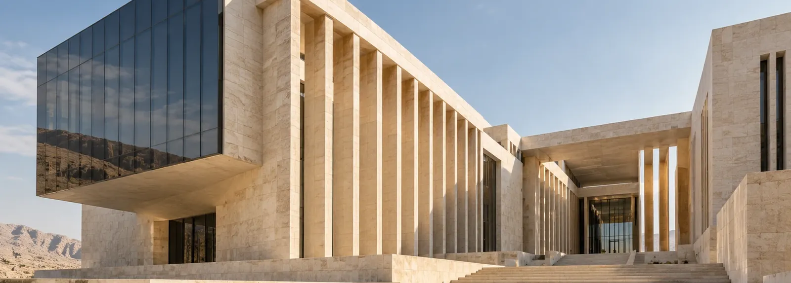
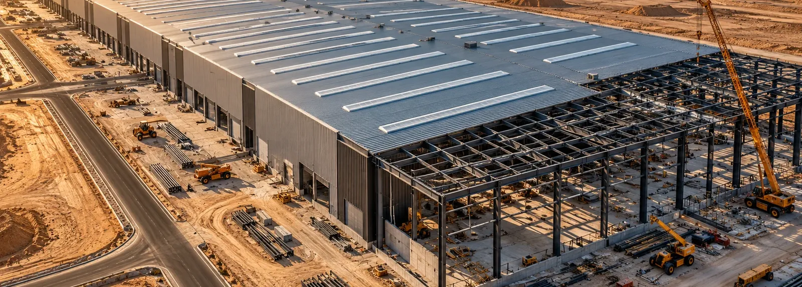

مجمع النيل للأعمال
مبنى إداري على الواجهة المائية، سُلّم على مراحل بينما استمرت التشطيبات في الأدوار العليا.
- الدور
- مقاول عام
- المساحة
- 18,000 m²
- المدة
- 26 شهراً
- الحالة
- مكتمل افتراضياً
مشروع وأرقام افتراضية؛ الصورة توضيحية.
نموذج تصميمي • الصور والمشروعات والأرقام توضيحية
مقاول عام EGYPT · EST. 2008 (DEMO)
مبانٍ، صناعة، وبنية تحتية في مصر. نطاق مكتوب، برنامج واقعي، وتسليم موثّق — بلا مبالغات.
فهرس الأعمال↓
بانوراما شركة مقاولات مصرية تعمل في المباني والصناعة والبنية التحتية. كل الأرقام والمشروعات أدناه توضيحية وليست سجلاً فعلياً.
ج — فهرس الأعمال
مبنى إداري على الواجهة المائية، سُلّم على مراحل بينما استمرت التشطيبات في الأدوار العليا.
مشروع وأرقام افتراضية؛ الصورة توضيحية.

بحور معدنية واسعة وأرضيات تخزين، نُفّذت قطاعاً بعد قطاع ليبدأ التشغيل مبكراً.
مشروع وأرقام افتراضية؛ الصورة توضيحية.
شبكات مرافق وطرق داخلية نُفّذت والحركة المرورية مفتوحة والسكان في بيوتهم.
مشروع وأرقام افتراضية؛ الصورة توضيحية.
د — القطاعات
لوحة مصغّرة بدل قائمة خدمات — طريقة سريعة لمعرفة نوع العمل الذي نقوم به. كل الصور توضيحية.
هـ — القدرات
تتولّى بانوراما الموقع بالكامل: الأعمال الإنشائية، الواجهات، التشطيبات وتنسيق المقاولين من الباطن، حتى التسليم.
مناسب حينيكون التصميم مكتملاً والأولوية للتنفيذ المنضبط.
مسار واحد من الفكرة إلى التسليم، فتُحسم تعارضات التنفيذ والتكلفة مبكراً بدل أن تظهر في الموقع.
مناسب حينيكون البرنامج ضيقاً أو التصميم ما زال قابلاً للتطوير.
تفاصيل معمارية دقيقة وتنسيق للأنظمة الكهروميكانيكية، مع اختبار وتشغيل تجريبي قبل الاستلام.
مناسب حينيكون الهيكل قائماً والمطلوب جودة الاستخدام اليومي.
خدمات افتراضية لتوضيح تجربة الموقع. يُؤكَّد النطاق الفعلي قبل أي استخدام إنتاجي.
و — المعايير
تُراجع مخاطر التنفيذ والتعاقد قبل بدء الأعمال، ويُسجَّل إجراء مقابل لكل خطر.
ضبط سلامة الموقع، واعتماد المواد والأعمال بفحص موثّق قبل الانتقال للمرحلة التالية.
مراجعات موثّقة، إغلاق للملاحظات، ومستندات تشغيل وصيانة تُسلَّم مع المبنى.
في الموقع الفعلي تُعرض الشهادات باسم الجهة المانحة ونطاقها وسريانها — ولا تُعرض شارات غير متحقَّقة.
ز — تواصل
نموذج محلي تجريبي: لا تُرسل أو تُحفظ أي بيانات.